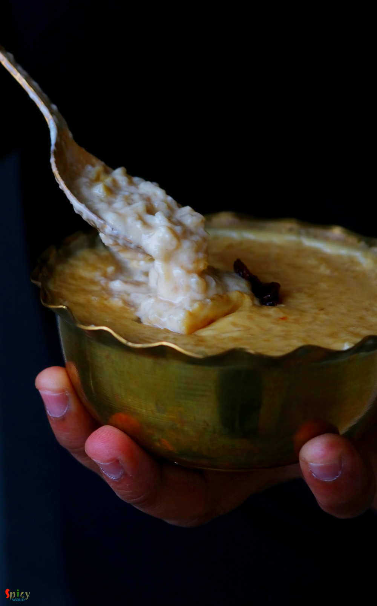
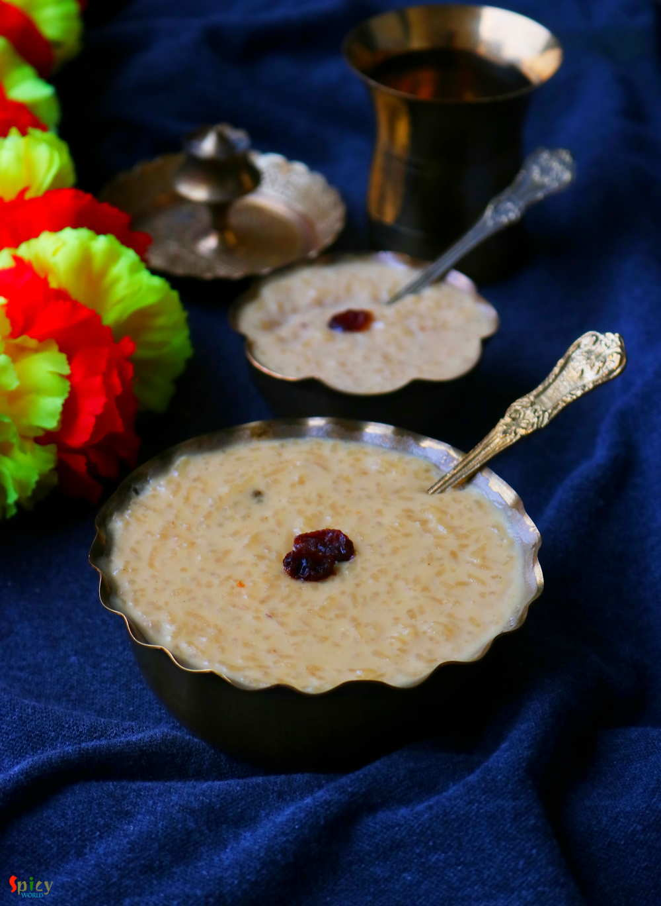

Simple and Easy Recipes
Nolen Gurer Payesh / Rice Pudding with Date Palm Jaggery
© 2016 Spicy World, Published on: Nov 26, 2018
'Payesh' / Rice pudding is a very common dessert in Bengal. Having payesh on any occasion is considered as a good sign. Nolen gur means Date Palm Jaggery which we get during winter season. The aroma and color of Nolen Gur is phenomenal. Sweet shops sell so many variety of sweets with date palm jaggery like - Gurer Rosogolla, Gurer Sondesh, Gurer Patisapta and what not! Payesh needs babysitting, as you have to reduce the milk to half of its quantity with patience, then cook the fragrant rice in that reduced milk and after that finish it off with date palm jaggery and raisins. Do try this recipe in your kitchen and let me know how it turned for you.

Ingredients
- 1/4th cup of Gobindovog / Kalijeera / Chinigura rice.
- 5-6 cups of full fat milk.
- 2 Teaspoons of ghee.
- A pinch of salt.
- 4-5 Tablespoons of date palm jaggery or nolen gur.
- 6-7 raisins.
- Some chopped nuts (cashew/ almond).
- Water.


Steps
Wash the rice once with water, then soak them in 3-4 Tablespoons of water for 30 minutes.
After that discard the water and add 1 Teaspoon of ghee to the rice. Mix well and keep it aside.
Boil the milk in a sauce pan on medium flame by frequently stirring and reduce it to half of it's quantity.
Then add the ghee coated rice into the reduced milk and cook until the rice becomes soft. Keep stirring in every 2-3 minutes on medium flame. This will take around 20 minutes.
Heat some ghee in another pan, fry raisins for a minute and add that to the cooked rice.
Only after that take 2-3 Tablespoons of the rice pudding and mix it with the jaggery. Now turn off the heat and add the jaggery along with pinch of salt to the whole pudding. Mix well for 2-3 minutes and again turn on the heat. When the rice becomes really soft then only add the jaggery as after that the rice will not get cooked.
Cook on medium flame until the pudding becomes thick.
Lastly add chopped nuts and turn off the heat.
Your nolen gurer payesh is ready to serve.
Serve this hot or chill with luchi ...
")